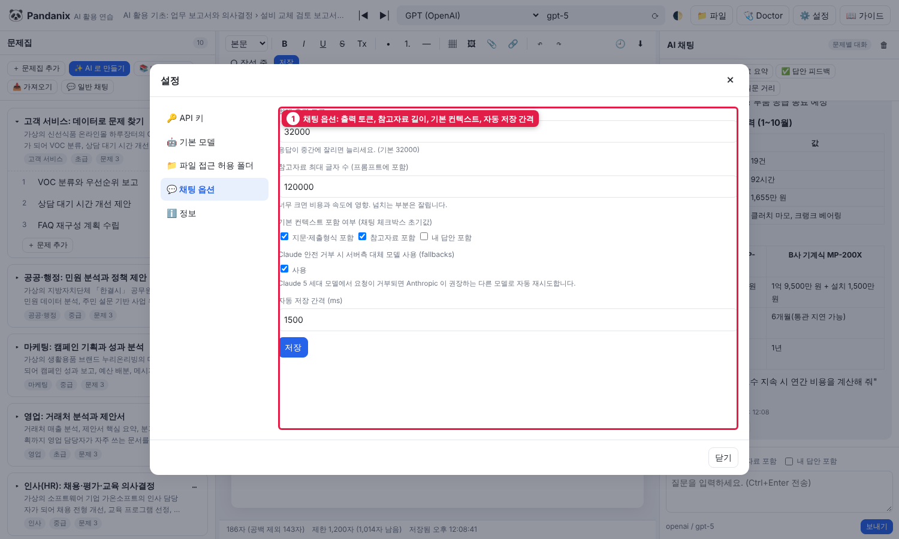
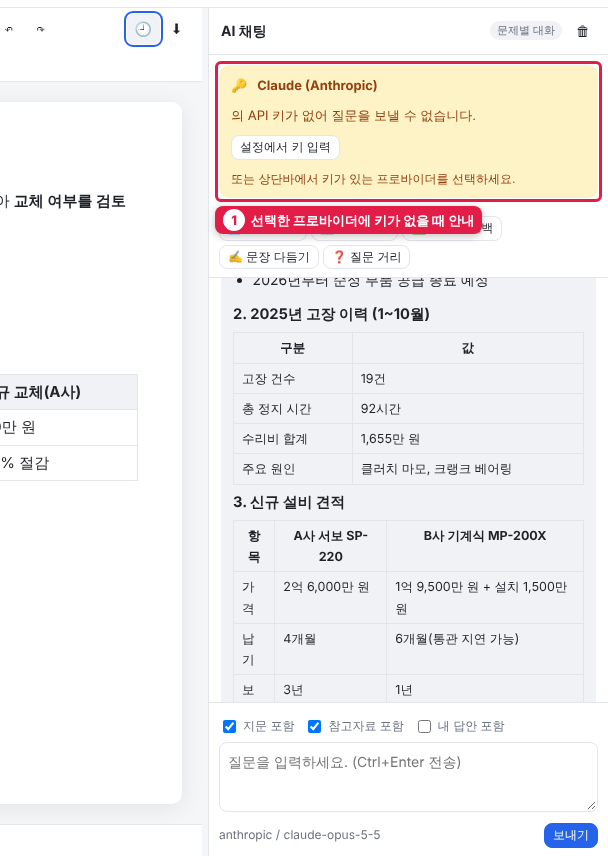

5. AI 채팅 (오른쪽 패널)
기본 사용

| 번호 | 항목 | 설명 |
|---|---|---|
| 1 | 🗑 | 이 문제의 대화 기록 지우기 |
| 2 | 빠른 작업 | 개요 제안 · 자료 요약 · 답안 피드백 · 문장 다듬기 · 질문 거리 |
| 3 | 복사 / 답안에 삽입 | 응답을 클립보드로, 또는 가운데 에디터 커서 위치에 삽입(표 포함) |
| 4 | 컨텍스트 선택 | 지문 · 참고자료 · 내 답안을 AI 에게 함께 보낼지 |
| 5 | 입력란 | 질문 입력, Ctrl+Enter 전송 |
| 6 | 보내기 / ■ 중지 | 응답 중에는 중지 버튼으로 바뀜 |
| 7 | 프로바이더 / 모델 | 지금 사용 중인 모델 (상단바에서 변경) |
- 상단바에서 프로바이더/모델 선택
- 입력란에 질문 → 보내기 또는
Ctrl+Enter - 응답은 실시간으로 표시. ■ 중지 로 끊을 수 있음
- 응답 아래 복사 / 답안에 삽입
대화는 문제마다 따로 저장되며, 다시 열면 이어집니다. 🗑 로 비울 수 있습니다.
- ■ 중지를 누르면 그때까지 받은 내용이 "(사용자가 중단함)" 표시와 함께 남고 바로 다음 질문을 보낼 수 있습니다.
- AI 서버가 5분 동안 아무 응답도 주지 않으면 자동으로 끊고 오류를 표시합니다. 오류 말풍선의 다시 시도 로 같은 질문을 다시 보낼 수 있습니다.
- 선택한 프로바이더에 키가 없으면 채팅 상단에 노란 안내와 설정에서 키 입력 버튼이 나타납니다.
AI 가 보는 것 (컨텍스트)
입력란 위 체크박스로 조절합니다. 체크박스의 초기값과 출력 토큰 등은 ⚙️ 설정 → 💬 채팅 옵션에서 바꿉니다.

| 옵션 | 포함되는 내용 | 기본 |
|---|---|---|
| 지문 포함 | 문제 제목, 지문, 제출 형식, 글자 수 제한, 평가 기준 | 켬 |
| 참고자료 포함 | 텍스트 참고자료 전문 (최대 12만 자, 설정에서 변경) | 켬 |
| 내 답안 포함 | 현재 에디터 내용 | 끔 (피드백/다듬기 버튼은 자동 포함) |
참고자료가 크면 비용과 응답 시간이 늘어납니다. 자료 요약을 한 번 받아 둔 뒤, 이후 질문은 "참고자료 포함" 을 끄는 것도 방법입니다.
빠른 작업 버튼
| 버튼 | 하는 일 |
|---|---|
| 📝 개요 제안 | 답안 목차와 각 항목에 담을 내용 제안 |
| 📊 자료 요약 | 참고자료 핵심을 항목별·표로 요약 |
| ✅ 답안 피드백 | 제출 형식·평가 기준 기준으로 잘한 점/부족한 점/개선안, 글자 수 준수 여부 |
| ✍️ 문장 다듬기 | 의미 유지하며 문장 교정, 수정 내역 표 |
| ❓ 질문 거리 | 스스로 점검할 질문 5개 |
입력란에 글을 쓴 채로 버튼을 누르면 "추가 요청" 으로 함께 전달됩니다. (관리자) 버튼 이름과 지시문은 server/lib/prompt.js 의 QUICK_ACTIONS 한 곳에서 바꿉니다.
잘 쓰는 요령
- 계산은 과정을 보여 달라고 하세요: "유지보수 지속 시 연간 비용을 계산 과정과 함께"
- 표로 요청: "분기별로 집계해서 표로"
- 역할을 주세요: "경영진 입장에서 이 보고서의 약점을 지적해 줘"
- AI 의 수치는 참고자료와 대조하세요. 없는 수치를 만들어내기도 합니다
- 응답이 중간에 잘리면 "계속" 이라고 입력하거나, 설정 > 채팅 옵션 > 최대 출력 토큰을 늘리세요
오류 메시지 읽기

선택한 프로바이더에 키가 없으면 채팅 상단에 안내가 뜹니다. 버튼으로 바로 설정을 엽니다.
| 메시지 | 조치 |
|---|---|
| API 키가 설정되지 않았습니다 | 설정 > API 키 입력 |
| 상단바에서 모델을 지정하세요 / 모델이 지정되지 않았습니다 | OpenCode·사용자 정의는 기본 모델이 없음. 상단바 ⟳ 로 목록을 불러와 선택 |
| 401 / 키가 잘못되었습니다 | 키 재확인, 만료 여부 |
| 404 / 모델을 찾을 수 없습니다 | 상단바 모델 ID 확인, ⟳ 로 목록 조회 |
| 429 / 한도 초과 | 잠시 후 재시도, 결제·크레딧 확인 |
| 서버에 연결할 수 없습니다 | 서버 창이 꺼졌는지, Base URL(로컬 서버) 확인 |
| 모델이 응답을 거부했습니다 | 질문을 바꿔 보세요 (Claude 는 설정에서 자동 대체 모델 사용 가능) |
| OpenCode: 404 / 엔드포인트를 찾을 수 없습니다 | 해당 모델이 chat/completions 를 지원하지 않는 경우. ⟳ 목록에서 다른 모델 선택 |